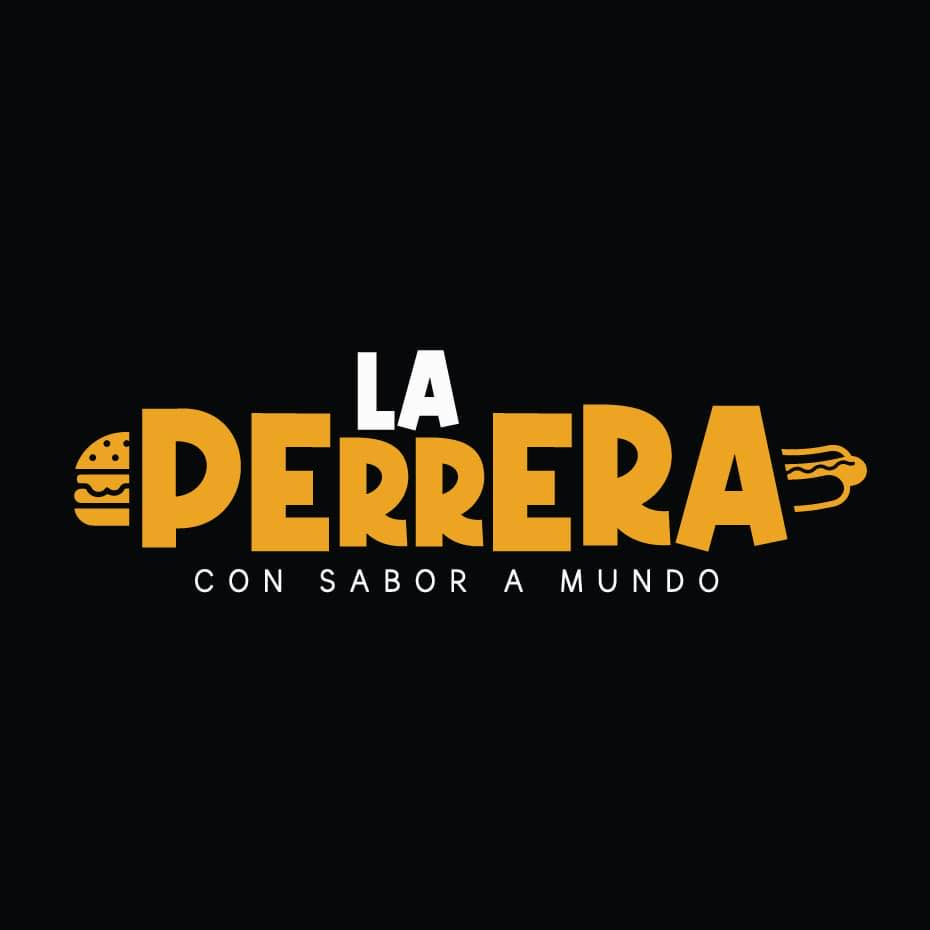

La Perrera es un restaurante nace en Cartago, Costa Rica un 15 de Julio del 2020 de una idea de ofrecer productos artesanales de gran sabor y alta calidad. Su dueño, Ricardo Molina, es un Chef Profesional que estudió la mezclas ideales entre comida rápida y artesanal. En conjunto con su padre, abre las puertas al mercado cartaginés en la cochera de su casa con la ilusiónde poder llevar su conocimiento a todos sus clientes por medio de los sabores de sus productos.
Desde Mayo del 2022, se asocia a Inversiones RF SRL para consolidar su marca, productos, y expandir sus servicios a más que un restaurante de comida artesanal. Este nuevo equipo, apostamos por los compromisos que conducen nuestro camino: calidad de la comida, innovación en las experiencias para todos nuestros cliente al reducir esfuerzos, apoyo a las comunidades, y comprometidos con el ambiente.

Nosotros como negocio de comida artesanal tenemos la mision de llevar a todos nuestros cientes una explosion de sabor a su boca, ademas de insentivar la compra a los pequens negocios
Queremos crear una marca reconocida nacional e internacionalmente de hamburgesas y comida rapida